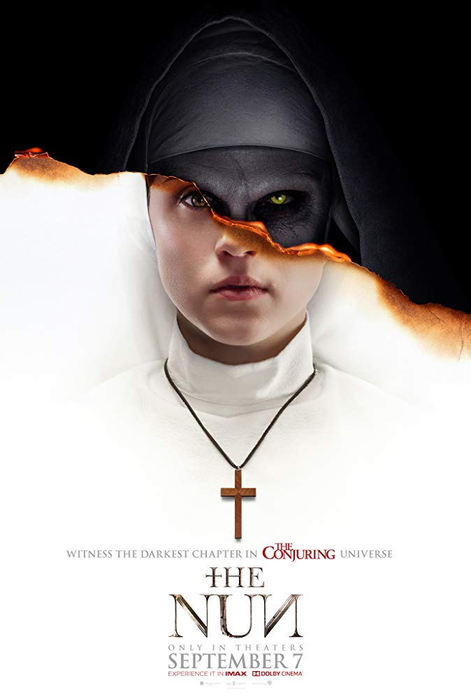

|

La monja (2018)
Género: terror 15€ |
Sinopsis: Después de 'Anabelle', 'La monja' es el nuevo spin-off de la saga 'Expediente Warren', centrándose en la figura demoniaca de la religiosa que acosa a Lorraine Warren en 'Expediente Warren: El caso Enfield'. Cuando una joven monja de clausura se quita la vida en un convento de Rumanía, el Vaticano envía a un sacerdote con un turbio pasado y a un novicio en pleno proceso de realización de sus votos para investigar el suceso. Juntos descubrirán el oscuro secreto que guarda la Orden del convento, arriesgando sus vidas, su fe y su propia alma mientras la abadía se convierte en un terrorífico campo de batalla entre las fuerzas de la vida y la muerte. El director británico Corin Hardy, conocido por su trabajo en 'The Hallow' o 'Butterfly,' dirige esta cinta de terror que cuenta con el propio James Wan como productor. Director: Corin Hardy Valoración: 2.7/5 |

Bienvenido Juan Luis!